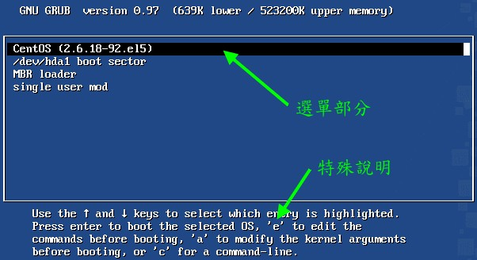
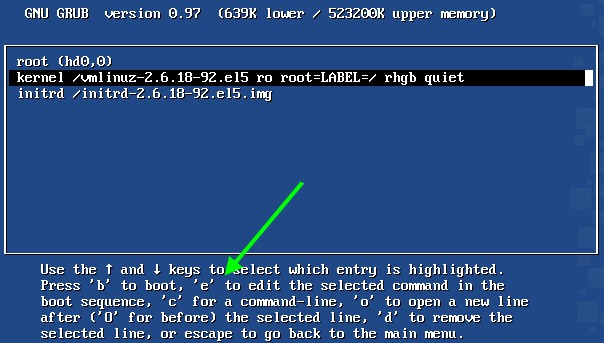
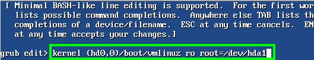
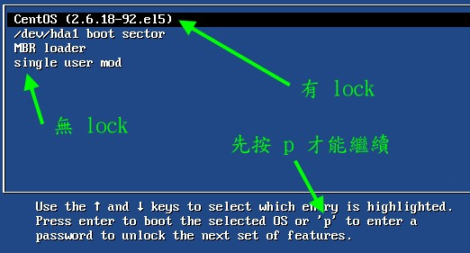

在看完了前面的整个启动流程，以及核心模块的整理之后，你应该会发现到一件事情，
那就是『 boot loader 是加载核心的重要工具』啊！没有 boot loader 的话，那么
kernel 根本就没有办法被系统加载的呢！所以，底下我们会先谈一谈 boot loader 的功能，
然后再讲一讲现阶段 Linux 里头最主流的 grub 这个 boot loader 吧！
 boot loader 的两个 stage
boot loader 的两个 stage
我们在第一小节启动流程的地方曾经讲过，在 BIOS 读完资讯后，接下来就是会到第一个启动装置的 MBR 去读取 boot loader 了。这个 boot loader
可以具有菜单功能、直接加载核心文件以及控制权移交的功能等，
系统必须要有 loader 才有办法加载该操作系统的核心就是了。但是我们都知道， MBR
是整个硬盘的第一个 sector 内的一个区块，充其量整个大小也才 446 bytes 而已。
我们的 loader 功能这么强，光是程序码与配置数据不可能只占不到 446 bytes 的容量吧？那如何安装？
为了解决这个问题，所以 Linux 将 boot loader 的程序码运行与配置值加载分成两个阶段 (stage) 来运行：
- Stage 1：运行 boot loader 主程序：
第一阶段为运行 boot loader 的主程序，这个主程序必须要被安装在启动区，亦即是 MBR 或者是 boot sector
。但如前所述，因为 MBR 实在太小了，所以，MBR 或 boot sector 通常仅安装 boot loader 的最小主程序，
并没有安装 loader 的相关配置档；
- Stage 2：主程序加载配置档：
第二阶段为透过 boot loader 加载所有配置档与相关的环境参数文件 (包括文件系统定义与主要配置档 menu.lst)，
一般来说，配置档都在 /boot 底下。
那么这些配置档是放在哪里啊？这些与 grub 有关的文件都放置到 /boot/grub 中，那我们就来看看有哪些文件吧！
[root@www ~]# ls -l /boot/grub
-rw-r--r-- device.map <==grub 的装置对应档(底下会谈到)
-rw-r--r-- e2fs_stage1_5 <==ext2/ext3 文件系统之定义档
-rw-r--r-- fat_stage1_5 <==FAT 文件系统之定义档
-rw-r--r-- ffs_stage1_5 <==FFS 文件系统之定义档
-rw------- grub.conf <==grub 在 Red Hat 的配置档
-rw-r--r-- iso9660_stage1_5 <==光驱文件系统定义档
-rw-r--r-- jfs_stage1_5 <==jfs 文件系统定义档
lrwxrwxrwx menu.lst -> ./grub.conf <==其实 menu.lst 才是配置档！
-rw-r--r-- minix_stage1_5 <==minix 文件系统定义档
-rw-r--r-- reiserfs_stage1_5 <==reiserfs 文件系统定义档
-rw-r--r-- splash.xpm.gz <==启动时在 grub 底下的背景图示
-rw-r--r-- stage1 <==stage 1 的相关说明
-rw-r--r-- stage2 <==stage 2 的相关说明
-rw-r--r-- ufs2_stage1_5 <==UFS 的文件系统定义档
-rw-r--r-- vstafs_stage1_5 <==vstafs 文件系统定义档
-rw-r--r-- xfs_stage1_5 <==xfs 文件系统定义档
|
从上面的说明你可以知道 /boot/grub/ 目录下最重要的就是配置档 (menu.lst) 以及各种文件系统的定义！
我们的 loader 读取了这种文件系统定义数据后，就能够认识文件系统并读取在该文件系统内的核心文件罗。
至於 grub 的配置档档名，其实应该是 menu.lst 的，只是在 Red Hat 里面被定义成为 /boot/grub.conf 而已。
鸟哥建议您还是记忆 menu.lst 比较好喔！
所以从上面的文件来看， grub 认识的文件系统真的非常多喔！正因为如此，所以 grub
才会取代 Lilo 这个老牌的 boot loader 嘛！好了，接下来就来瞧瞧配置档内有啥配置值吧！
grub 的配置档
/boot/grub/menu.lst 与菜单类型
grub 是目前使用最广泛的 Linux 启动管理程序，旧的 Lilo 这个启动管理程序现在已经很少见了，
所以本章才会将 Lilo 的介绍舍弃的说。grub 的优点挺多的，包括有：
- 认识与支持较多的文件系统，并且可以使用 grub 的主程序直接在文件系统中搜寻核心档名；
- 启动的时候，可以『自行编辑与修改启动配置项目』，类似 bash 的命令模式；
- 可以动态搜寻配置档，而不需要在修改配置档后重新安装 grub 。亦即是我们只要修改完
/boot/grub/menu.lst 里头的配置后，下次启动就生效了！
上面第三点其实就是 Stage 1, Stage 2 分别安装在 MBR (主程序) 与文件系统当中 (配置档与定义档) 的原因啦！
好了，接下来，让我们好好了解一下 grub 的配置档： /boot/grub/menu.lst 这玩意儿吧！
要注意喔，那个 lst 是 LST 的小写，不要搞错罗！
安装在 MBR 的 grub 主程序，最重要的任务之一就是从磁碟当中加载核心文件，
以让核心能够顺利的驱动整个系统的硬件。所以罗， grub 必须要认识硬盘才行啊！那么 grub 到底是如何认识硬盘的呢？
嘿嘿！ grub 对硬盘的代号配置与传统的 Linux 磁碟代号可完全是不同的！grub 对硬盘的识别使用的是如下的代号：
(hd0,0)
够神了吧？跟 /dev/hda1 风马牛不相干～怎么办啊？其实只要注意几个东西即可，那就是：
- 硬盘代号以小括号 ( ) 包起来；
- 硬盘以 hd 表示，后面会接一组数字；
- 以『搜寻顺序』做为硬盘的编号，而不是依照硬盘排线的排序！(这个重要！)
- 第一个搜寻到的硬盘为 0 号，第二个为 1 号，以此类推；
- 每颗硬盘的第一个 partition 代号为 0 ，依序类推。
所以说，第一颗『搜寻到的硬盘』代号为：『(hd0)』，而该颗硬盘的第一号分割槽为『(hd0,0)』，这样说了解了吧？
反正你要记得，在 grub 里面，他开始的数字是 0 而不是 1 就是了！
Tips:
在较旧的主板上面，通常第一颗硬盘会插在 IDE 1 的 master 上，就会是 /dev/hda，所以常常我们可能会误会
/dev/hda 就是 (hd0)，其实不是喔！要看你的 BIOS 配置值才行！有的主板 BIOS
可以调整启动的硬盘搜寻顺序，那么就要注意了，因为 grub 的硬盘代号可能会跟著改变呐！留意留意！
|  |
所以说，整个硬盘代号为：
| 硬盘搜寻顺序 | 在 Grub 当中的代号 |
| 第一颗 | (hd0) (hd0,0) (hd0,1) (hd0,4).... |
| 第二颗 | (hd1) (hd1,0) (hd1,1) (hd1,4).... |
| 第三颗 | (hd2) (hd2,0) (hd2,1) (hd2,4).... |
这样应该比较好看出来了吧？第一颗硬盘的 MBR 安装处的硬盘代号就是『(hd0)』，
而第一颗硬盘的第一个分割槽的 boot sector 代号就是『(hd0,0)』第一颗硬盘的第一个逻辑分割槽的
boot sector 代号为『(hd0,4)』了了吧！
|
例题：
假设你的系统仅有一颗 SATA 硬盘，请说明该硬盘的第一个逻辑分割槽在 Linux 与 grub 当中的档名与代号：
答：
因为是 SATA 磁碟，加上使用逻辑分割槽，因此 Linux 当中的档名为 /dev/sda5 才对 (1~4 保留给 primary 与 extended 使用)。
至於 grub 当中的磁碟代号则由於仅有一颗磁碟，因此代号会是『 (hd0,4) 』才对。
|
了解了 grub 当中最麻烦的硬盘代号后，接下来，我们就可以瞧一瞧配置档的内容了。先看一下鸟哥的 CentOS
内的 /boot/grub/menu.lst 好了：
[root@www ~]# vim /boot/grub/menu.lst
default=0 <==默认启动选项，使用第 1 个启动菜单 (title)
timeout=5 <==若 5 秒内未动键盘，使用默认菜单启动
splashimage=(hd0,0)/grub/splash.xpm.gz <==背景图示所在的文件
hiddenmenu <==读秒期间是否显示出完整的菜单画面(默认隐藏)
title CentOS (2.6.18-92.el5) <==第一个菜单的内容
root (hd0,0)
kernel /vmlinuz-2.6.18-92.el5 ro root=LABEL=/1 rhgb quiet
initrd /initrd-2.6.18-92.el5.img
|
在 title 以前的四行，都是属於 grub 的整体配置，包括默认的等待时间与默认的启动项目，
还有显示的画面特性等等。至於 title 后面才是指定启动的核心文件或者是 boot loader 控制权。
在整体配置方面的项目主要常见的有：
- default=0
这个必须要与 title 作为对照，在配置档里面有几个 title ，启动的时候就会有几个菜单可以选择。
由於 grub 启始号码为 0 号，因此 default=0 代表使用『第一个 title 项目』来启动的意思。
default 的意思是，如果在读秒时间结束前都没有动到键盘， grub 默认使用此 title 项目 (在此为 0 号) 来启动。
- timeout=5
启动时会进行读秒，如果在 5 秒钟内没有按下任何按键，就会使用上面提到的 default 后面接的那个 title
项目来启动的意思。如果你觉得 5 秒太短，那可以将这个数值调大 (例如 30 秒) 即可。此外，如果 timeout=0
代表直接使用 default 值进行启动而不读秒，timeout=-1 则代表直接进入菜单不读秒了！
- splashimage=(hd0,0)/grub/splash.xpm.gz
有没有发现你的 CentOS 在启动的时候背景不是黑白而是有色彩变化的呢？那就是这个文件提供的背景图示啦(注3)！不过这个文件的实际路径写法怎么会是这样啊？很简单啊～上述的意思是：在 (hd0,0) 这个分割槽内的最顶层目录中，底下的 grub/splash.xpm.gz 那个文件的意思。
由於鸟哥将 /boot 这个目录独立成为 /dev/hda1 ，因此这边就会写成『在 /dev/hda1
里面的 grub/splash.xpm.gz 』的意思啦！想一想，如果你的 /boot 目录并没有独立成为一个分割槽，
这里会写成如何？
- hiddenmenu
这个说的是，启动时是否要显示菜单？目前 CentOS 默认是不要显示菜单，
如果您想要显示菜单，那就将这个配置值注解掉！
整体配置的地方大概是这样，而底下那个 title 则是显示启动的配置项目。如同前一小节提到的，启动时可以选择
(1)直接指定核心文件启动或 (2)将 boot loader 控制权转移到下个 loader
(此过程称为 chain-loader)。每个 title 后面接的是『该启动项目名称的显示』，亦即是在菜单出现时，菜单上面的名称而已。
那么这两种方式的配置有啥不同呢？
- 直接指定核心启动
既然要指定核心启动，所以当然要找到核心文件啦！此外，有可能还需要用到 initrd 的 RAM Disk 配置档。但是如前说的，
尚未启动完成，所以我们必须要以 grub 的硬盘识别方式找出完整的 kernel 与 initrd 档名才行。
因此，我们可能需要有底下的方式来配置才行！
1. 先指定核心文件放置的 partition，再读取文件 (目录树)，
最后才加入文件的实际档名与路径 (kernel 与 initrd)；
鸟哥的 /boot 为 /dev/hda1 ，因此核心文件的配置则成为：
root (hd0,0) <==代表核心文件放在那个 partition 当中
kernel /vmlinuz-2.6.18-92.el5 ro root=LABEL=/1 rhgb quiet
initrd /initrd-2.6.18-92.el5.img
|
上面的 root, kernel, initrd 后面接的参数的意义说明如下：
root ：代表的是『核心文件放置的那个 partition 而不是根目录』喔！不要搞错了！
以鸟哥的案例来说，我的根目录为 /dev/hda2 而 /boot 独立为 /dev/hda1 ，因为与 /boot 有关，
所以磁碟代号就会成为 (hd0,0) 罗。
kernel ：至於 kernel 后面接的则是核心的档名，而在档名后面接的则是核心的参数。
由於启动过程中需要挂载根目录，因此 kernel 后面接的那个 root=LABEL=/1 指的是『Linux 的根目录在哪个 partition 』的意思。
还记得第八章谈过的 LABEL 挂载功能吧？
是的，这里使用 LABEL 来挂载根目录。至於 rhgb 为色彩显示而 quiet 则是安静模式 (萤幕不会输出核心侦测的资讯)。
initrd ：就是前面提到的 initrd 制作出 RAM Disk 的文件档名啦！
2. 直接指定 partition 与档名，不需要额外指定核心文件所在装置代号
kernel (hd0,0)/vmlinuz-2.6.18-92.el5 ro root=LABEL=/1 rhgb quiet
initrd (hd0,0)/initrd-2.6.18-92.el5.img
|
老实说，鸟哥比较喜欢这种样式的档名写法，因为这样我们就能够知道核心文件是在哪个装置内的某个档名，
而不会去想到我们的根目录 (/, root) 啦！让我们来想想 /boot 有独立分割与无独立分割的情况吧！
|
例题：
我的系统分割是： /dev/hda1 (/), /dev/hda2 (swap) 而已，且我的核心文件为 /boot/vmlinuz，请问 grub 的 menu.lst
内该如何撰写核心文件位置？
答：
我们使用叠代的方式来了解一下好了。由於核心档名为 /boot/vmlinuz，转成装置档名与代号会成为如下的过程： 原始文件： /boot/vmlinuz ↓
Linux 装置：(/dev/hda1)/boot/vmlinuz ↓
grub 装置：(hd0,0)/boot/vmlinuz
所以最终的 kernel 写法会变成：
kernel (hd0,0)/boot/vmlinuz root=/dev/hda1 ...
|
|
例题：
同上，只是我的分割情况变成： /dev/sda1 (/boot), /dev/sda5 (/) 时？
答：
由於 /boot 被独立出来了，所以情况会不一样喔！如下所示： 原始文件： /boot/vmlinuz ↓
Linux 装置：(/dev/sda1)/vmlinuz ↓
grub 装置：(hd0,0)/vmlinuz
所以最终的 kernel 写法会变成：
kernel (hd0,0)/vmlinuz root=/dev/sda5 ...
|
- 利用 chain loader 的方式转交控制权
所谓的 chain loader (启动管理程序的链结) 仅是在将控制权交给下一个 boot loader 而已，
所以 grub 并不需要认识与找出 kernel 的档名 ，『 他只是将 boot
的控制权交给下一个 boot sector 或 MBR 内的 boot loader 而已 』
所以通常他也不需要去查验下一个 boot loader 的文件系统！
一般来说， chain loader 的配置只要两个就够了，一个是预计要前往的 boot sector 所在的分割槽代号，
另一个则是配置 chainloader 在那个分割槽的 boot sector (第一个磁区) 上！假设我的 Windows 分割槽在
/dev/hda1 ，且我又只有一颗硬盘，那么要 grub 将控制权交给 windows 的 loader 只要这样就够了：
[root@www ~]# vi /boot/grub/menu.lst
....前略....
title Windows partition
root (hd0,0) <==配置使用此分割槽
chainloader +1 <== +1 可以想成第一个磁区，亦即是 boot sector
|
上面的范例中，我们可以很简单的这样想：那个 (hd0,0) 就是 Windows 的 C 槽所在磁碟，
而 chainloader +1 就是让系统加载该分割槽当中的第一个磁区 (就是 boot sector) 内的启动管理程序。
不过，由於 Windows 的启动碟需要配置为活化 (active) 状态，且我们的 grub 默认会去检验该分割槽的文件系统。
因此我们可以重新将上面的范例改写成这样：
[root@www ~]# vi /boot/grub/menu.lst
....前略....
title Windows partition
rootnoverify (hd0,0) <==不检验此分割槽
chainloader +1
makeactive <==配置此分割槽为启动碟(active)
|
grub 的功能还不止此，他还能够隐藏某些分割槽。举例来说，我的 /dev/hda5 是安装 Linux 的分割槽，
我不想让 Windows 能够认识这个分割槽时，你可以这样做：
[root@www ~]# vi /boot/grub/menu.lst
....前略....
title Windows partition
hide (hd0,4) <==隐藏 (hd0,4) 这个分割槽
rootnoverify (hd0,0)
chainloader +1
makeactive
|
initrd 的重要性与创建新
initrd 文件
我们在本章稍早之前『 boot loader 与 kernel 加载』的地方已经提到过 initrd
这玩意儿，他的目的在於提供启动过程中所需要的最重要核心模块，以让系统启动过程可以顺利完成。
会需要 initrd 的原因，是因为核心模块放置於 /lib/modules/$(uname -r)/kernel/ 当中，
这些模块必须要根目录 (/) 被挂载时才能够被读取。但是如果核心本身不具备磁碟的驱动程序时，
当然无法挂载根目录，也就没有办法取得驱动程序，因此造成两难的地步。
initrd 可以将 /lib/modules/.... 内的『启动过程当中一定需要的模块』包成一个文件 (档名就是 initrd)，
然后在启动时透过主机的 INT 13 硬件功能将该文件读出来解压缩，并且 initrd 在内存内会模拟成为根目录，
由於此虚拟文件系统 (Initial RAM Disk) 主要包含磁碟与文件系统的模块，因此我们的核心最后就能够认识实际的磁碟，
那就能够进行实际根目录的挂载啦！所以说：『initrd
内所包含的模块大多是与启动过程有关，而主要以文件系统及硬盘模块 (如 usb, SCSI 等) 为主』的啦！
一般来说，需要 initrd 的时刻为：
- 根目录所在磁碟为 SATA、U盘 或 SCSI 等连接介面；
- 根目录所在文件系统为 LVM, RAID 等特殊格式；
- 根目录所在文件系统为非传统 Linux 认识的文件系统时；
- 其他必须要在核心加载时提供的模块。
Tips:
之前鸟哥忽略 initrd 这个文件的重要性，是因为鸟哥很穷... ^_^。因为鸟哥的 Linux 主机都是较早期的硬件，
使用的是 IDE 介面的硬盘，而且并没有使用 LVM 等特殊格式的文件系统，而 Linux 核心本身就认识 IDE 介面的磁碟，
因此不需要 initrd 也可以顺利启动完成的。自从 SATA 硬盘流行起来后，没有 initrd 就没办法启动了！
因为 SATA 硬盘使用的是 SCSI 模块来驱动的，而 Linux 默认将 SCSI 功能编译成为模块....
| |
一般来说，各 distribution 提供的核心都会附上 initrd 文件，但如果你有特殊需要所以想重制 initrd 文件的话，
可以使用 mkinitrd 来处理的。这个文件的处理方式很简单， man mkinitrd 就知道了！ ^_^。
我们还是简单的介绍一下去！
[root@www ~]# mkinitrd [-v] [--with=模块名称] initrd档名 核心版本
选项与参数：
-v ：显示 mkinitrd 的运行过程
--with=模块名称：模块名称指的是模块的名字而已，不需要填写档名。举例来说，
目前核心版本的 ext3 文件系统模块为底下的档名：
/lib/modules/$(uname -r)/kernel/fs/ext3/ext3.ko
那你应该要写成： --with=ext3 就好了 (省略 .ko)
initrd档名：你所要创建的 initrd 档名，尽量取有意义又好记的名字。
核心版本 ：某一个核心的版本，如果是目前的核心则是『 $(uname -r) 』
范例一：以 mkinitrd 的默认功能创建一个 initrd 虚拟磁碟文件
[root@www ~]# mkinitrd -v initrd_$(uname -r) $(uname -r)
Creating initramfs
Looking for deps of module ehci-hcd
Looking for deps of module ohci-hcd
....(中间省略)....
Adding module ehci-hcd <==最终加入 initrd 的就是底下的模块
Adding module ohci-hcd
Adding module uhci-hcd
Adding module jbd
Adding module ext3
Adding module scsi_mod
Adding module sd_mod
Adding module libata
Adding module pata_sis
[root@www ~]# ll initrd_*
-rw------- 1 root root 2406443 Apr 30 02:55 initrd_2.6.18-92.el5
# 由於目前的核心版本可使用 uname -r 取得，因此鸟哥使用较简单的命令来处理罗～
# 此时 initrd 会被创建起来，你可以将他移动到 /boot 等待使用。
范例二：添加 8139too 这个模块的 initrd 文件
[root@www ~]# mkinitrd -v --with=8139too initrd_vbirdtest $(uname -r)
....(前面省略)....
Adding module mii
Adding module 8139too <==看到没！这样就加入了！
|
initrd 创建完成之后，同时核心也处理完毕后，我们就可以使用 grub 来创建菜单了！底下继续瞧一瞧吧！
测试与安装 grub
如果你的 Linux 主机本来就是使用 grub 作为 loader 的话，那么你就不需要重新安装 grub 了，
因为 grub 本来就会主动去读取配置档啊！您说是吧！但如果你的 Linux 原来使用的并非 grub ，
那么就需要来安装啦！如何安装呢？首先，你必须要使用 grub-install 将一些必要的文件复制到
/boot/grub 里面去，你应该这样做的：
Tips:
安装些什么呢？因为 boot loader 有两个 stage ，而配置档得要放置到适当的地方。
这个 grub-install 就是在安装配置档 (包括文件系统定义档与 menu.lst 等等) 而已！
如果要将 grub 的 stage1 主程序安装起来，就得要使用 grub shell 的功能喔！本章稍后会介绍。
| |
[root@www ~]# grub-install [--root-directory=DIR] INSTALL_DEVICE
选项与参数：
--root-directory=DIR 那个 DIR 为实际的目录，使用 grub-install 默认会将
grub 所有的文件都复制到 /boot/grub/* ，如果想要复制到其他目录与装置去，
就得要用这个参数。
INSTALL_DEVICE 安装的装置代号啦！
范例一：将 grub 安装在目前系统的 MBR 底下，我的系统为 /dev/hda：
[root@www ~]# grub-install /dev/hda
# 因为原本 /dev/hda 就是使用 grub ，所以似乎不会出现什么特别的信息。
# 如果去查阅一下 /boot/grub 的内容，会发现所有的文件都升级了，因为我们重装了！
范例二：我的 /home 为独立的 /dev/hda3 ，如何安装 grub 到 /dev/hda3 (boot sector)
[root@www ~]# grub-install --root-directory=/home /dev/hda3
Probing devices to guess BIOS drives. This may take a long time.
Installation finished. No error reported.
This is the contents of the device map /home/boot/grub/device.map.
Check if this is correct or not. If any of the lines is incorrect,
fix it and re-run the script `grub-install'.
(fd0) /dev/fd0
(hd0) /dev/hda <==会给予装置代号的对应表！
[root@www ~]# ll /home/boot/grub/
-rw-r--r-- 1 root root 30 Apr 30 11:12 device.map
-rw-r--r-- 1 root root 7584 Apr 30 11:12 e2fs_stage1_5
....(底下省略)....
# 看！文件都安装进来了！但是注意到，我们并没有配置档喔！那要自己创建！
|
所以说， grub-install 是安装 grub 相关的文件 (例如文件系统定义档)
到你的装置上面去等待在启动时被读取，但还需要配置好配置档 (menu.lst) 后，再以 grub shell 来安装 grub 主程序到
MBR 或者是 boot sector 上面去喔！好了，那我们来思考一下想要安装的数据。
例题：
我预计启动时要直接显示菜单，且菜单倒数为 30 秒。另外，在原本的 menu.lst 当中新增三个启动菜单，分别如下说明：
- 假设 /dev/hda1 内含有 boot loader ，此 loader 如何取得控制权？
- 如何重新读取 MBR 内的 loader ？
- 利用你原本的系统核心文件，创建一个可强制进入单人维护模式的菜单
第一点很简单，就利用上一小节的说明来处理即可。至於第二点，MBR 的读取读的是整颗硬盘的第一个磁区，
因此 root (hd0) 才是对的。第三点则与核心的后续参数有关。整个文件可以被改写成这样：
[root@www ~]# vim /boot/grub/menu.lst
default=0
timeout=30
splashimage=(hd0,0)/grub/splash.xpm.gz
#hiddenmenu
title CentOS (2.6.18-92.el5)
root (hd0,0)
kernel /vmlinuz-2.6.18-92.el5 ro root=LABEL=/1 rhgb quiet
initrd /initrd-2.6.18-92.el5.img
title /dev/hda1 boot sector <==本例中的第一个新增菜单
root (hd0,0)
chainloader +1
title MBR loader <==新增的第二个菜单
root (hd0) <==MBR 为整颗磁碟的第一个磁区，所以用整颗磁碟的代号
chainloader +1
title single user mode <==新增的第三个菜单(其实由原本的title复制来的)
root (hd0,0)
kernel /vmlinuz-2.6.18-92.el5 ro root=LABEL=/1 rhgb quiet single
initrd /initrd-2.6.18-92.el5.img
|
下次启动时，你就会发现有四个菜单可以选择，而默认会以第一个菜单来启动喔！
|
我们已经将配置档处理完毕，但是你要知道的是，我们并不知道 /dev/hda1 到底有没有包含 grub 的主程序，
因此我们想要将 grub 主程序再次的安装到 /dev/hda1 的 boot sector ，也想要重新安装 grub 到 MBR 上面去。
此时我们就得要使用 grub shell 罗！整个安装与 grub shell 的动作其实很简单，
如果您有兴趣研究的话，可以使用 info grub 去查阅～鸟哥这里仅介绍几个有用的命令而已。
- 用『 root (hdx,x) 』选择含有 grub 目录的那个 partition 代号；
- 用『 find /boot/grub/stage1 』看看能否找到安装资讯文件；
- 用『 find /boot/vmlinuz 』看看能否找到 kernel file (不一定要成功！)；
- 用『 setup (hdx,x) 』或『 setup (hdx) 』将 grub 安装在 boot sector 或 MBR；
- 用『 quit 』来离开 grub shell ！
由於我们最需要安装的就是那个 stage1 啦！那才是 grub 的主程序嘛！而且配置档通常与主程序摆在同一个目录下。
因此我们需要使用 root (hd0,0) 去找到 /boot/grub/stage1 喔！接下来，请用 grub 来进入 grub shell 吧！进入
grub 后，会出现一个『 grub> 』的提示字节啊！
[root@www ~]# grub
# 1. 先配置一下含有 grub 目录的那个 partition 啊！
grub> root (hd0,0)
Filesystem type is ext2fs, partition type 0x83
# 鸟哥主机的分割中，/boot/grub 在 /boot 的分割槽，亦即是 /dev/hda1 内喔！
# 另外， grub 也能够分辨出该分割槽的文件系统 (ext2)。
# 2. 搜寻一下，是否存在 stage1 这个资讯文件？
grub> find /boot/grub/stage1
(hd0,2)
# 见鬼！怎么会只有一个！我们明明有 /boot/grub 与 /home/boot/grub 啊！
# 因为 /boot 是独立的，因此要找到该档名就得要用如下的方式：
grub> find /grub/stage1
(hd0,0)
# 这样就能够找到罗！要特别注意 grub 找到不是目录树，而是装置内的文件。
# 3. 搜寻一下是否可以找到核心？ /boot/vmlinuz-2.6.18-92.el5 ？
grub> find /boot/vmlinuz-2.6.18-92.el5
Error 15: File not found
grub> find /vmlinuz-2.6.18-92.el5
(hd0,0)
# 再次强调，因为 /boot/ 是独立的，因此就会变成上头的模样罗！
# 4. 将主程序安装上去吧！安装到 MBR 看看！
grub> setup (hd0)
Checking if "/boot/grub/stage1" exists... no <==因为 /boot 是独立的
Checking if "/grub/stage1" exists... yes <==所以这个档名才是对的！
Checking if "/grub/stage2" exists... yes
Checking if "/grub/e2fs_stage1_5" exists... yes
Running "embed /grub/e2fs_stage1_5 (hd0)"... 15 sectors are embedded.
succeeded
Running "install /grub/stage1 (hd0) (hd0)1+15 p (hd0,0)/grub/stage2
/grub/grub.conf"... succeeded <==将 stage1 程序安装妥当罗！
Done.
# 很好！确实有装起来～这样 grub 就在 MBR 当中了！
# 5. 那么重复安装到我的 /dev/hda1 呢？亦即是 boot sector 当中？
grub> setup (hd0,0)
Checking if "/boot/grub/stage1" exists... no
Checking if "/grub/stage1" exists... yes
Checking if "/grub/stage2" exists... yes
Checking if "/grub/e2fs_stage1_5" exists... yes
Running "embed /grub/e2fs_stage1_5 (hd0,0)"... failed (this is not fatal)
Running "embed /grub/e2fs_stage1_5 (hd0,0)"... failed (this is not fatal)
Running "install /grub/stage1 (hd0,0) /grub/stage2 p /grub/grub.conf "...
succeeded
Done.
# 虽然无法将 stage1_5 安装到 boot sector 去，不过，还不会有问题，
# 重点是最后面那个 stage1 要安装后，显示 succeeded 字样就可以了！
grub> quit
|
如此一来，就已经将 grub 安装到 MBR 及 /dev/hda1 的 boot sector 里面去了！
而且读取的是 (hd0,0) 里面的 /grub/menu.lst 那个文件喔！真是很重要啊！重要到不行！
最后总结一下：
- 如果是从其他 boot loader 转成 grub 时，得先使用 grub-install 安装 grub 配置档；
- 开始编辑 menu.lst 这个重要的配置档；
- 透过 grub 来将主程序安装到系统中，如 MBR 的 (hd0) 或 boot sector 的 (hd0,0) 等等。
启动前的额外功能修改
事实上，上一个小节配置好之后，你的 grub 就已经在你的 Linux 系统上面了，而且同时存在於
MBR 与 boot sector 当中呢！所以，我们已经可以重新启动来查阅看看啦！
另外，如果你正在进行启动，那么请注意，我们可以在默认菜单 (鸟哥的范例当中是 30 秒) 按下任意键，
还可以进行 grub 的『线上编修』功能喔！真是棒啊！先来看看启动画面吧！

图 3.5.1、grub 启动画面示意图
由於鸟哥将隐藏菜单的功能取消了，因此你会直接看到这四个菜单，同时会有读秒的咚咚在倒数。
菜单部分的画面其实就是 title 后面的文字啦！你现在知道如何修改 title 后面的文字了吧！ ^_^。
如果你使用上下键去选择第二 (/dev/hda1 boot sector) 或第三 (MBR loader) 时，会发现同样的画面重复出现！
这是因为那两个是 loader 移交而已嘛！而我们都使用相同的 grub 与相同的 menu.lst 配置档！
因此这个画面就会重复出现了！这样了解乎？
另外，如果你再仔细看的话，会发现到上图中底部还有一些细部的选项，似乎有个 'e' edit 的样子！
没错～ grub 支持线上编修命令喔！这是个很有用的功能！假如刚刚你将 menu.lst 的内容写错了，导致出现无法启动的问题时，
我们可以查阅该 title 菜单的内容并加以修改喔！举例来说，我想要知道第一个菜单的实际内容时，将反白光棒移动到第一个菜单，
再按下 'e' 会进入如下画面：

图 3.5.2、grub 单一菜单内容
哈哈！这不就是我们在 menu.lst 里面配置的东西吗？没错！此时你还可以继续进一步修改喔！
注意看到上图最底下的说明，你还可以使用：
- e：进入 grub shell 的编辑画面；
- o：在光标所在行底下再新增一行；
- d：将光标所在行删除。
我们说过， grub 是可以直接使用核心文件来启动的，所以，如果您很清楚的知道你的根目录 (/)
在那个 partition ，而且知道你的核心文件档名 (通常都会有个 /boot/vmlinuz 连结到正确的档名)，
那么直接在图三的画面当中，以上述的 o, d, e 三个按键来编修，成为类似底下这样：

图 3.5.3、grub edit 的线上编修功能
按下 [Enter] 按键后，然后输入 b 来 boot ，就可以启动啦！所以说，万一你的 /boot/grub/menu.lst
配置错误，或者是因为安装的缘故，或者是因为核心文件的缘故，导致无法顺利启动时，记得啊，可以在 grub 的菜单部分，
使用 grub shell 的方式去查询 (find) 或者是直接指定核心文件，就能够启动啦！ ^_^
另外，很多时候我们的 grub 可能会发生错误，导致『连 grub 都无法启动』，那么根本就无法使用
grub 的线上编修功能嘛！怎么办？没关系啊！我们可以利用具有 grub 启动的 CD 来启动，
然后再以 CD 的 grub 的线上编修，嘿嘿！同样可以使用硬盘上面的核心文件来启动啦！很好玩吧！ ^_^
关於核心功能当中的 vga 配置
事实上，你的 tty1~tty6 除了 80x24 的解析度外，还能够有其他解析度的支持喔！但前提之下是你的核心必须支持
FRAMEBUFFER_CONSOLE 这个核心功能选项才行。如何确定有没有支持呢？你可以查阅 /boot/config-2.6.18-92.el5
这个文件，然后这样搜寻：
[root@www ~]# grep 'FRAMEBUFFER_CONSOLE' /boot/config-2.6.18-92.el5
CONFIG_FRAMEBUFFER_CONSOLE=y
# 这个项目如果出现 y 那就是有支持啦！如果被注解或是 n ，那就是没支持啦！
|
那么如何调整 tty1 ~ tty6 终端机的解析度呢？先参考底下的表格再说 (此为十进位数值)：
| 彩度\解析度 | 640x480 | 800x600 | 1024x768 |
1280x1024 | bit |
| 256 | 769 | 771 | 773 | 775 | 8 bit |
| 32768 | 784 | 787 | 790 | 793 | 15 bit |
| 65536 | 785 | 788 | 791 | 794 | 16 bit |
| 16.8M | 786 | 789 | 792 | 795 | 32 bit |
假设你想要将你的终端机萤幕解析度调整到 1024x768 ，且色彩深度为 15bit 色的时候，就得要指定 vga=790 那个数字！
举例来说，鸟哥的 tty1 就想要这样的解析度时，你可以这样做：
[root@www ~]# vim /boot/grub/menu.lst
....(前面省略)....
title CentOS (2.6.18-92.el5)
root (hd0,0)
kernel /vmlinuz-2.6.18-92.el5 ro root=LABEL=/1 rhgb quiet vga=790
initrd /initrd-2.6.18-92.el5.img
....(后面省略)....
|
重新启动并选择此菜单进入 Linux，你跑到 tty1 去看看，嘿嘿！就已经是 1024x768 的解析度罗！
只是字会变的很小，但是画面的范围会加大就是了。不过，某些版本支持的是 16 进位制，所以还需要修改一下格式呢！
一般使用上表当中的值应该就可以了。不过，由於不同的操作系统与硬件可能会有不一样的情况，因此，
上面的值不见得一定可以在您的机器上面测试成功，建议您可以分别配置看看哩～以找出可以使用的值！ ^_^
BIOS 无法读取大硬盘的问题
现今的硬盘容量越来越大，如果你使用旧的主板来安插大容量硬盘时，可能由於系统 BIOS 或者是其他问题，
导致 BIOS 无法判断该硬盘的容量，此时你的系统读取可能会有问题。为什么呢？
我们在本章一开始的启动流程讲过，当进入 Linux 核心功能后，他会主动的再去侦测一下整个系统，
因此 BIOS 捉不到的硬件在 Linux 核心反而可能会可以捉到而正常使用。举例来说，过去很多朋友常常会发现，
『我的系统使用 DVD 启动安装时，可以顺利的安装好 Linux ，但是第一次启动时，
萤幕只出现黑压压的一片，且出现 grub> 的字样，而无法进入 Linux 系统中』，这又是怎么一回事？
- 在安装的过程中，由於是使用 DVD 或 CD 启动，因此加载 Linux 核心不成问题，而核心会去侦测系统硬件，因此可以捉到
BIOS 捉不到的硬盘，此时你确实可以安装 Linux 在大容量的硬盘上，且不会出现任何问题。
- 但是在进入硬盘启动时，由於 kernel 与 initrd 文件都是透过 BIOS 的 INT 13 通道读取的，
因此你的 kernel 与 initrd 如果放置在 BIOS 无法判断的磁区中，当然就无法被系统加载，而仅会出现 grub shell (grub>)
等待你的处理而已。
更多 grub 错误的代码查询可以到底下的连结查阅：
现在你知道问题所在啦！那就是 BIOS 无法读取大容量磁碟内的 kernel 与 initrd 文件。
那如何解决呢？很简单啦！就让 kernel 与 initrd 文件放置在大硬盘的最前头，由於 BIOS 至少可以读到大磁碟的
1024 磁柱内的数据，因此就能够读取核心与虚拟文件系统的文件罗。那如何让 kernel 与 initrd
放置到整颗硬盘的最前面呢？简单的要命吧！就创建 /boot 独立分割槽，并将 /boot
放置到最前面即可！更多其他的解决方案可参考文后的延伸阅读(注4)
万一你已经安装了 Linux 且发生了上述的问题，那该怎办？你可以这样作的：
- 最简单的做法，就是直接重灌，并且制作出 /boot 挂载的 partition ，同时确认该 partition 是在 1024 cylinder
之前才行。
- 如果实在不想重灌，没有关系，利用我们刚刚上头提到的 grub 功能，额外创建一个可启动软盘，
或者是直接以光驱启动，然后以 grub 的编写能力进入 Linux 。
- 另外的办法其实是骗过 BIOS ，直接将硬盘的 cylinder, head, sector 等等资讯直接写到
BIOS 当中去，如此一来你的 BIOS 可能就可以读得到与支持的到你的大硬盘了。
不过，鸟哥还是建议您可以重新安装，并且制作出 /boot 这个 partition 啦！ ^_^！这也是为啥这次更版中，
鸟哥特别强调要分割出 /boot 这个分割槽的原因啊！
为个别菜单加上口令
想像一个环境，如果你管理的是一间计算机教室，这间计算机教室因为可对外开放，但是你又担心某些 partition
被学生不小心的弄乱，因此你可能会想要将某些启动菜单作个保护。这个时候，为每个菜单作个加密的口令就是个可行的方案啦！
那如何在启动的过程里面提供口令保护呢？首先，你必须要创建口令，而且还需要是加密过后的喔！
否则人家跑到 /boot/grub/menu.lst 不就可以探查到你的启动口令了？那如何创建加密的口令呢？
我们可以透过 grub 提供的 md5 编码来处理的，如下所示：
[root@www ~]# grub-md5-crypt
Password: <==输入口令
Retype password: <==再输入一次
$1$kvlI0/$byrbNgkt/.REKPQdfg287. <==这就是产生的 md5 口令！
|
上面产生的最后一行，由 $ 开始到 . 结束的那行，就是你的口令经过 md5 编码过后的咚咚！
将这个口令复制下来吧！假设我们要将第一个选项加入这个口令，而第四个选项加入另外的口令，
那你应该要这样做：
[root@www ~]# vim /boot/grub/menu.lst
....(前面省略)....
title CentOS (2.6.18-92.el5)
password --md5 $1$kvlI0/$byrbNgkt/.REKPQdfg287.
root (hd0,0)
kernel /vmlinuz-2.6.18-92.el5 ro root=LABEL=/1 rhgb quiet vga=790
initrd /initrd-2.6.18-92.el5.img
....(中间省略)....
title single user mode
password --md5 $1$GFnI0/$UuiZc/7snugLtVN4J/WyM/
root (hd0,0)
kernel /vmlinuz-2.6.18-92.el5 ro root=LABEL=/1 rhgb quiet single
initrd /initrd-2.6.18-92.el5.img
|
上表的案例中，我们两个菜单进入的口令并不相同，可以进行同学的分类啦！不过这样也造成一个问题，
那就是一定要输入口令才能够进入启动流程，如果你在远程使用 reboot 重新启动，并且主机前面并没有任何人的话....
你的主机并不会主动进入启动程序喔！ ^_^
你必须要注意的是：password 这个项目一定要在 title 底下的第一行。
不过，此项功能还是可能被破解的，因为使用者可以透过编辑模式 (e) 进入菜单，并删除口令栏位并按下 b
就能够进行启动流程了！真糟糕！那怎办？只好透过整体的 password (放在所有的 title 之前) ，
然后在 title 底下的第一行配置 lock ，那使用者想要编辑时，也得要输入口令才行啊！配置有点像这样：
[root@www ~]# vim /boot/grub/menu.lst
default=0
timeout=30
password --md5 $1$kvlI0/$byrbNgkt/.REKPQdfg287. <==放在整体配置处
splashimage=(hd0,0)/grub/splash.xpm.gz
#hiddenmenu
title CentOS (2.6.18-92.el5)
lock <==多了锁死的功能
root (hd0,0)
kernel /vmlinuz-2.6.18-92.el5 ro root=LABEL=/1 rhgb quiet vga=790
initrd /initrd-2.6.18-92.el5.img
|
那么重新启动后，画面会像这样：

图 3.8.1、 grub 加密的示意图
你可以看到最下方仅出现 p 的功能，由於 2, 3, 4 菜单并没有使用 lock ，因此这三个菜单使用者还是可以运行启动程序，
但是第一个菜单由於有 lock 项目，因此除非你输入正确的口令，否则第一个菜单是无法被加载运行的。
另外，这个项目也能够避免你的 menu.lst 在启动的过程中被乱改，是具有保密 menu.lst 的功能啦！
与刚刚的菜单口令功能不同。